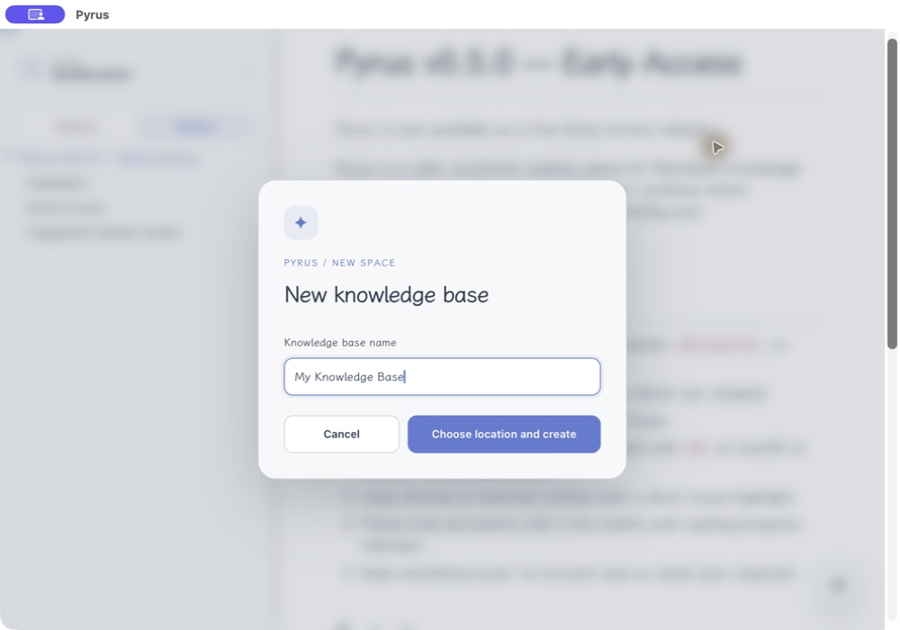
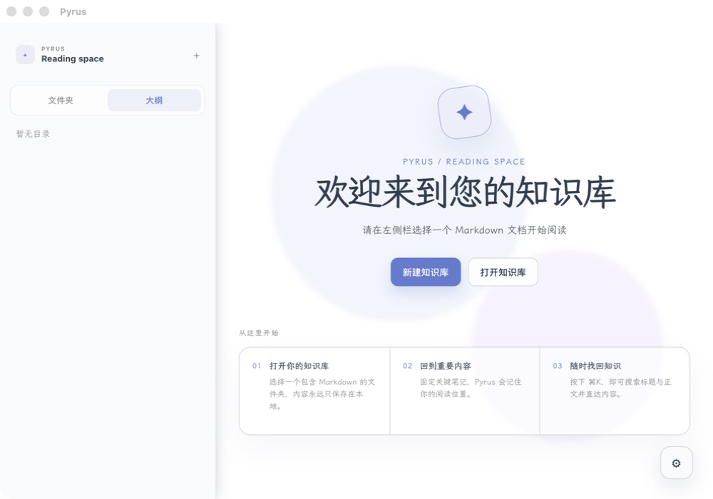
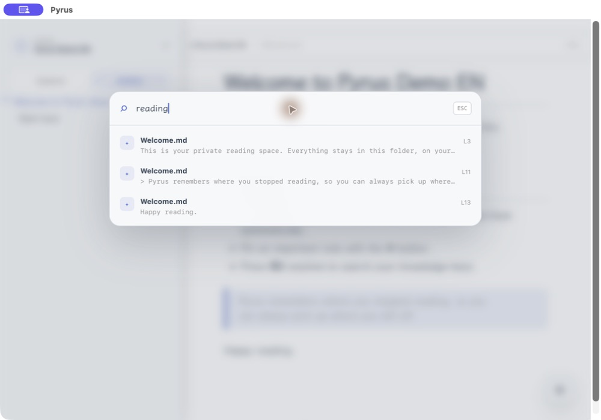
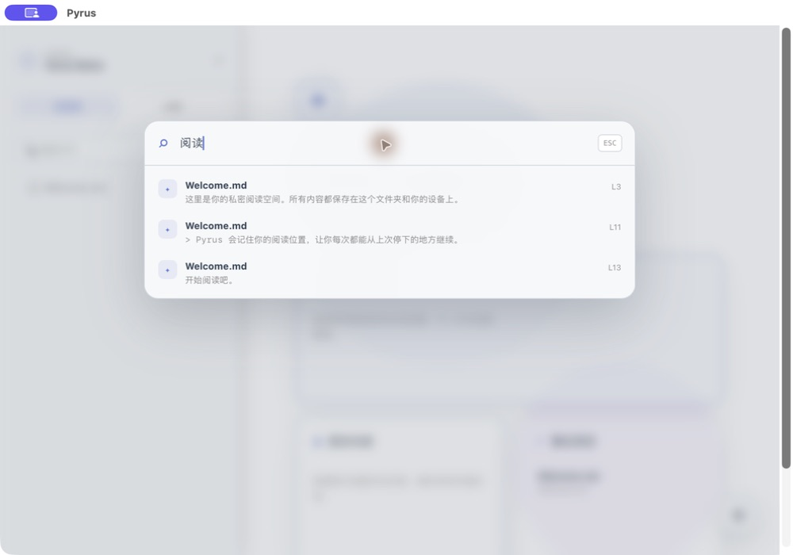

↳
Continue reading
继续阅读
Every document remembers where you stopped, then brings you back with a quiet progress cue.
每篇文档都会记住你的阅读位置，并用轻量的进度提示带你回到那里。
YOUR LOCAL READING SPACE
你的本地阅读空间
Pyrus helps you return to what matters, continue where you stopped, and find any note without sending your knowledge anywhere.
Pyrus 帮你回到重要内容、从上次停下的地方继续，并在不上传任何知识的前提下找回每一篇笔记。
Free during Early Access · No account · Local-first
Early Access 阶段免费 · 无账户 · 本地优先


Pyrus stays focused on the reading loop: open, find, read, and naturally continue.
Pyrus 专注于阅读闭环：打开、找回、阅读，然后自然地继续。
Every document remembers where you stopped, then brings you back with a quiet progress cue.
每篇文档都会记住你的阅读位置，并用轻量的进度提示带你回到那里。
Press ⌘K to search file names and content, then jump straight to the matching passage.
按下 ⌘K 搜索文件名和正文，并直接跳到匹配段落。
Pin essential notes and keep your knowledge home intentional, not crowded.
固定关键笔记，让你的知识库首页始终清晰而不拥挤。
Nothing to configure before you can start reading.
不必配置一堆选项，就可以开始阅读。


Pyrus does not require an account or cloud sync. Your Markdown files remain ordinary files in folders you control.
Pyrus 不要求账户或云同步。你的 Markdown 始终是你自己掌控的普通文件。
Pyrus is free during Early Access. Your feedback will shape what it becomes next.
Pyrus 在 Early Access 阶段免费。你的反馈会决定它接下来成为怎样的产品。
Download Pyrus下载 Pyrus